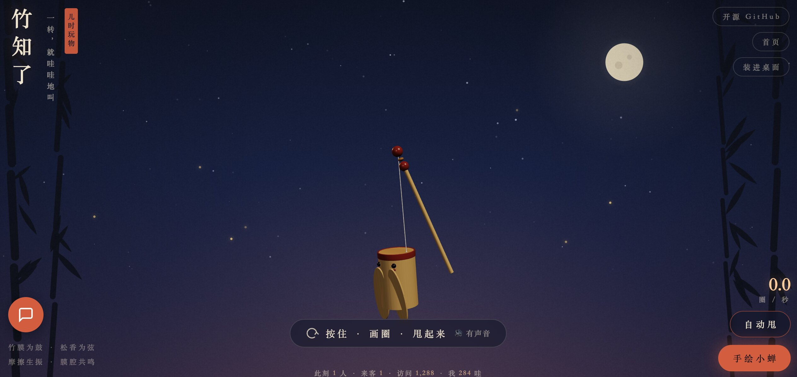
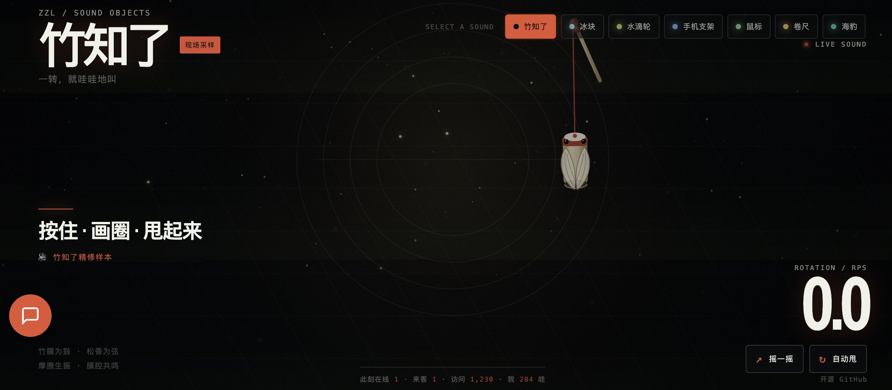
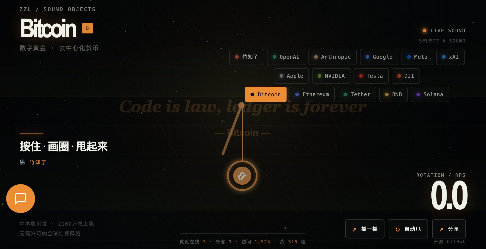

三个版本的竹知了网页游戏，同一套物理引擎，不同的视觉与声音体验。

小时候路边摊上几块钱的竹蝉，现在用一张 HTML 文件就能随时甩响。零依赖、零构建、断网也能玩。
基于绳系质点物理模拟发声：竹筒是绳系质点，甩得越快、绳越紧，声音越响越亮。声音主源是真实录音采样，解码失败则回退 Web Audio 合成。水墨风背景，星星萤火虫，传统美学。

同一个甩法，换一副会成梗的声音。7 套声音主题切换：竹知了、冰块、水滴轮、手机支架、鼠标、卷尺、海豹。
赛博 HUD 视觉风格，等宽字体，扫描线动画。每个主题都有独立的配色方案、背景图案和音频采样。顶部 Tab 栏一键切换，整个 UI 随主题变色。

15 个科技巨头主题：OpenAI、Anthropic、Google、Meta、xAI、Apple、NVIDIA、Tesla、DJI。每个主题都有独特的 logo 圆盘和企业文化名言。
旋转的不再是竹筒，而是 AI 公司的 logo 圆盘。背景中半透明显示公司经典语录，如 Apple 的 "Think Different"、NVIDIA 的 "The GPU is the engine of AI"。统一使用知了原声，视觉风格各异。
基于 PHP + Redis 实时记录，每 30 秒自动刷新。
输入邮箱即可留言，数据存入 Redis。